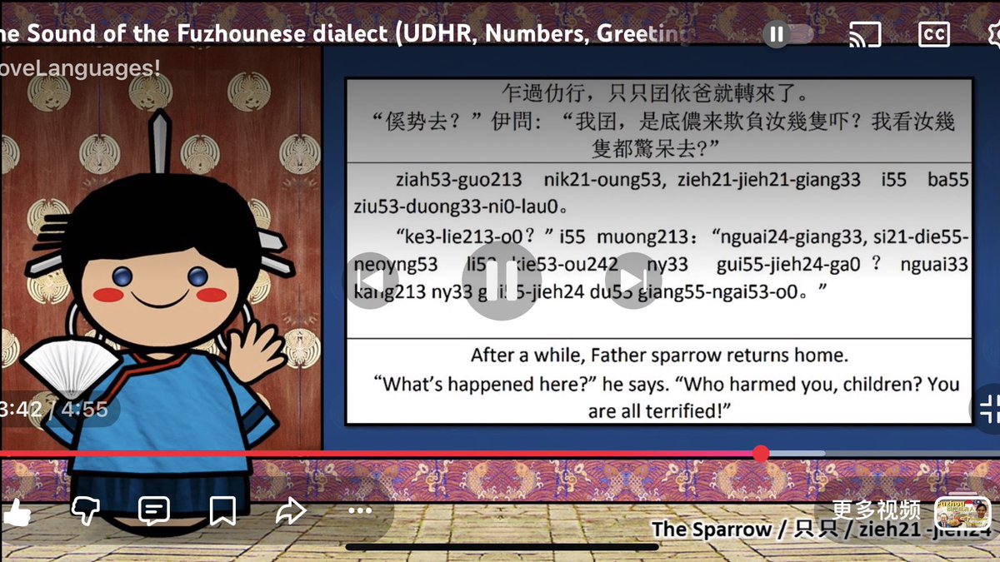

小虚空🍥
@tokerumaisurii
@Cathy_eko @YuesFan 我不懂福州话🥹
第一次去福州的时候是高二去打竞赛，我以为自己会闽南话那多少能听懂点福州话，结果到了地铁站里听报站一个字都不懂，彻底听外语的感觉。

宫本絵
@Cathy_eko
@tokerumaisurii @YuesFan 这个，不知道是不是白话字（这个是福州话） https://t.co/cyhWfqT0gP